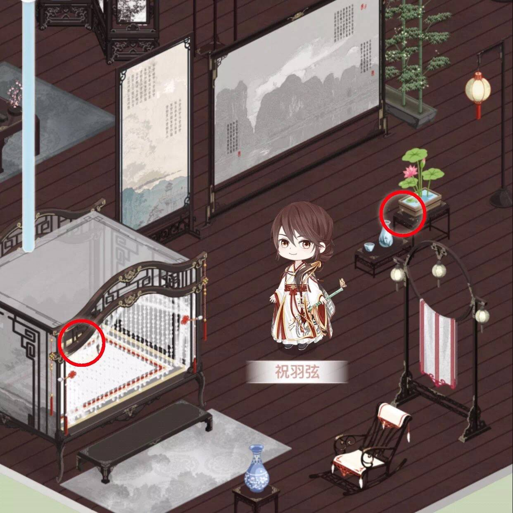
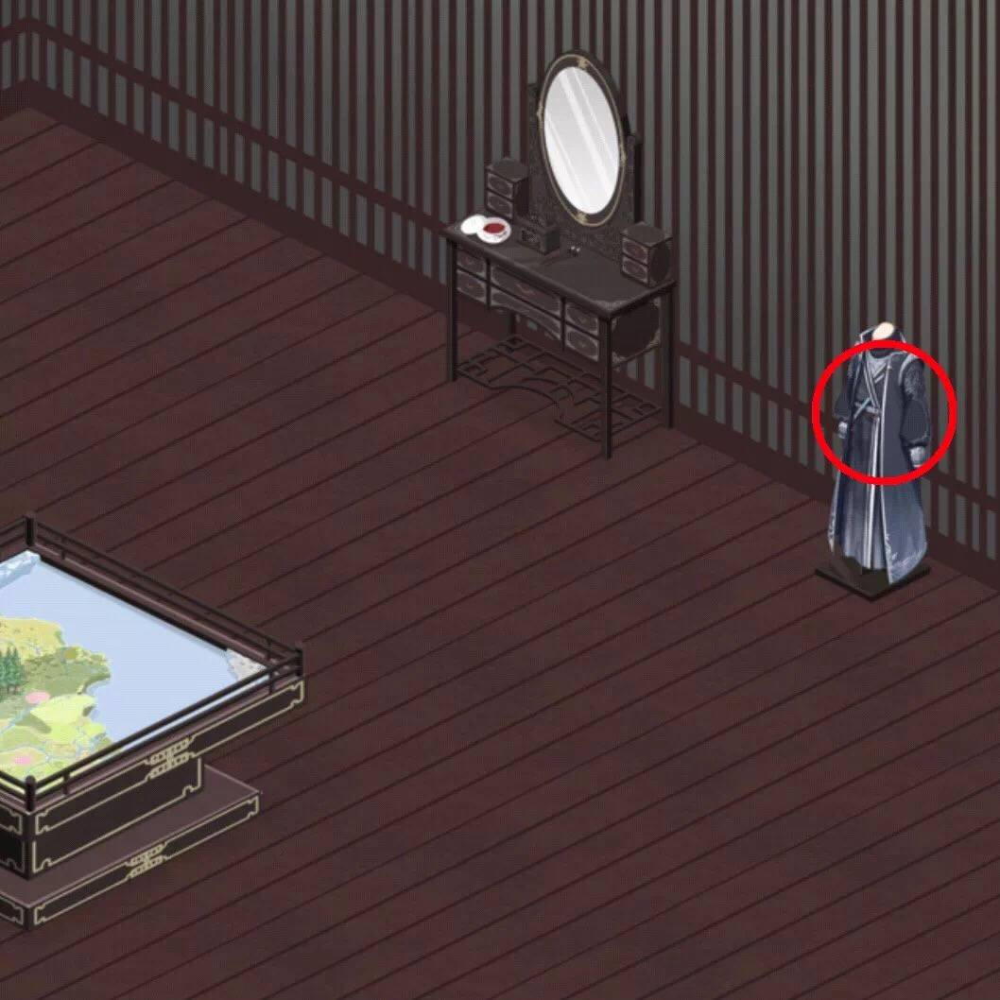
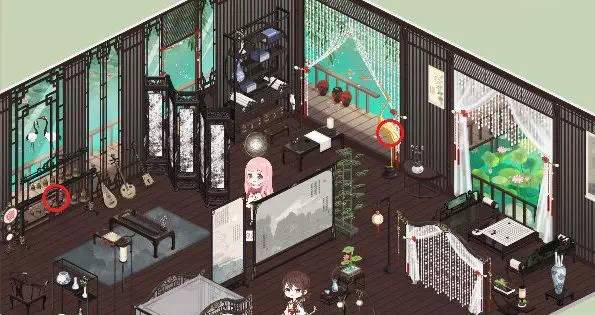
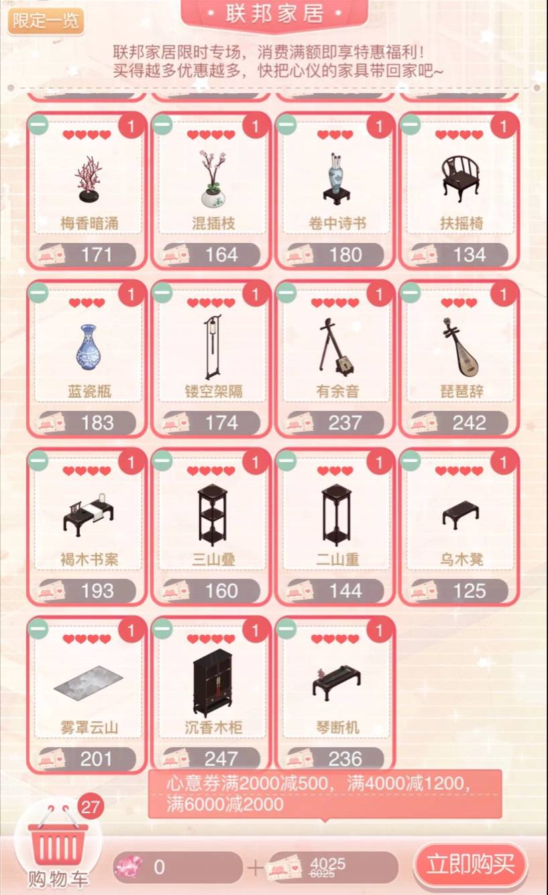

2018.02.08小屋·流音听雨榭
更新时间：2018-02-08
更新人员：凉夜
活动介绍
1.活动时间：2月8日5:00—2月25日23:59。
- 小屋「留言板」会收到祝羽弦留言，可由此拜访祝羽弦的小屋。
- 「外出拜访一应邀拝访」也可抵达。
2.祝羽弦小屋中有四处微弱的光圏，提示可以点击的地方。
3.点击祝羽弦面前的「锁珠帘」（婴儿床），可获取祝羽弦梦影「红梅点雪袍」套装。

4.点击祝羽弦身后的「荷阶清酌」可以开启通往密室的「清池」。

5.点击密室右侧「东海侠客」，不管选择拿走或归还，都能得到20心意券。
- 以后每天都可点击一次，获取20左右不等的心意券。
6.点击主屋左侧窗边的「双排编钟」，可在15秒内点击十次获得4000金币。
- 以后每天都可点击，获取4000左右不等的金币。
- 由于点击次数有限，所以时间十分充足。

7.点击右侧阳台边的「金喙台」会发现15个绮梦枝。
- 选择拿走则直接获得，未见惩罚。
- 选择归还则赠送15个流影纱。
- 以后每天都可点击，获取绮梦枝/流影纱/锻光石。
- 从以往经验来看，分解家具掉落的绮梦枝多于流影纱、流影纱多于锻光石，大家可结合自己的重构需求选择是否归还。
8.访客祝羽弦需要集齐愿之庭·限时阁和联邦家居·限时专场的所有限定家具才能获得。
- 访客邀请方法：小屋信息-小屋访客-邀请
9.限时专场总共家具27件，原价6025券，满6000减2000。
- 建议大家攒齐了心意券一次购买，以享受最高档优惠。

10.除了日常的任务外，还可以通过加速清扫 （大约1钻/48分钟）获取心意券。